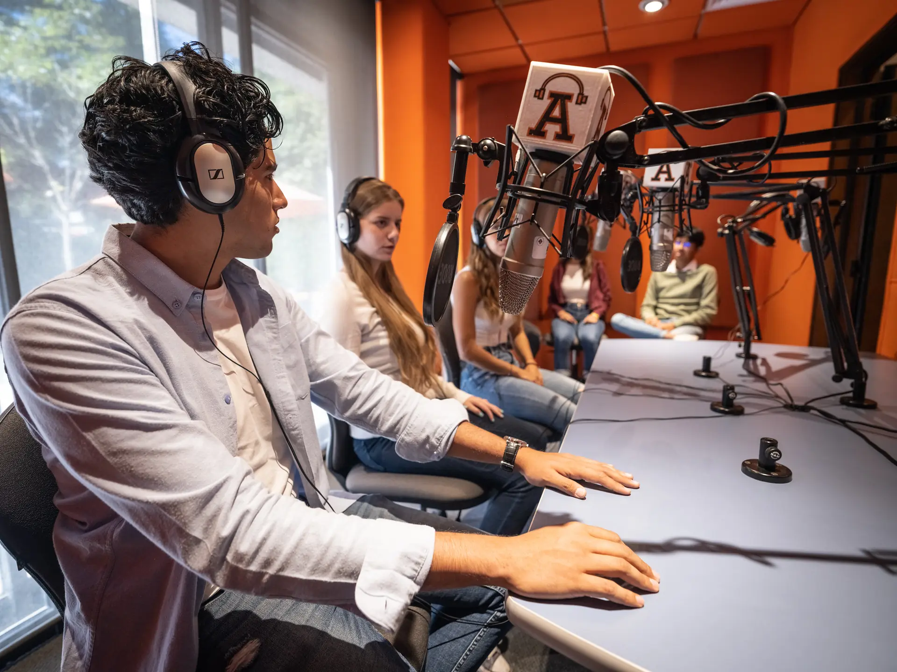
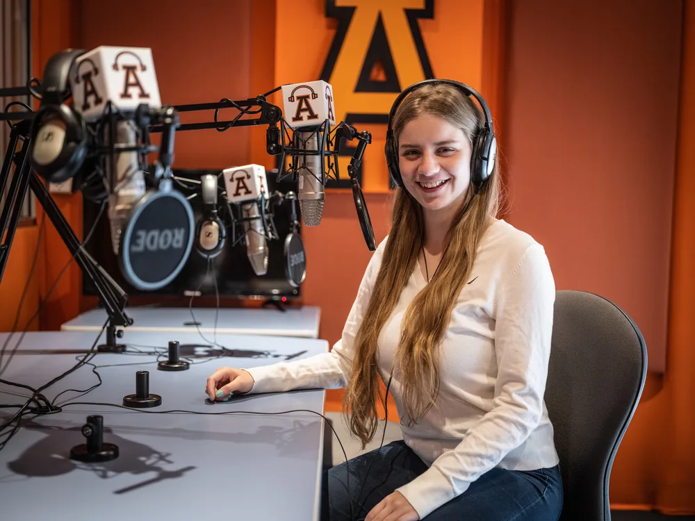
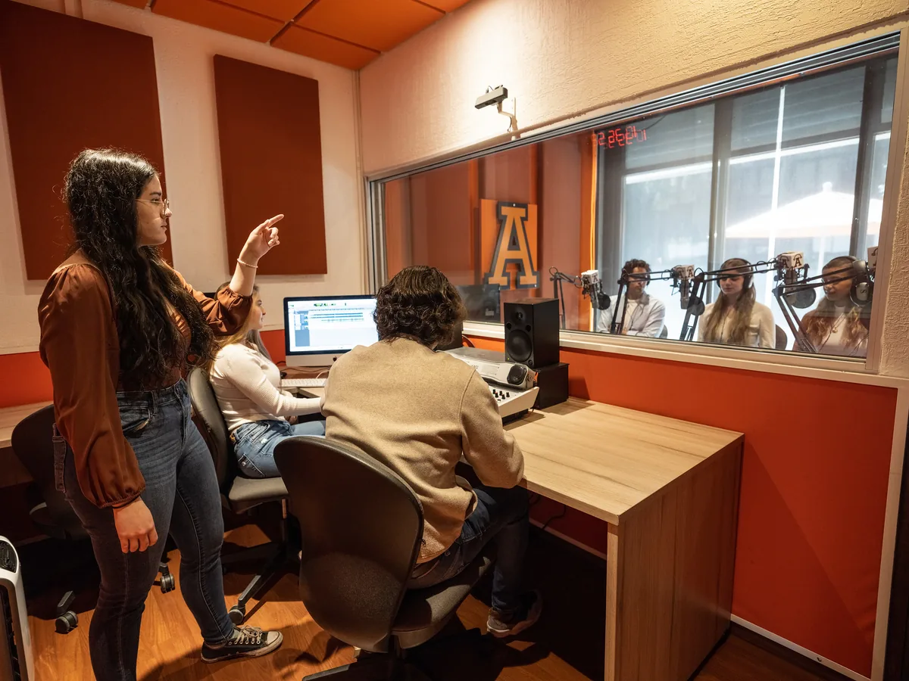
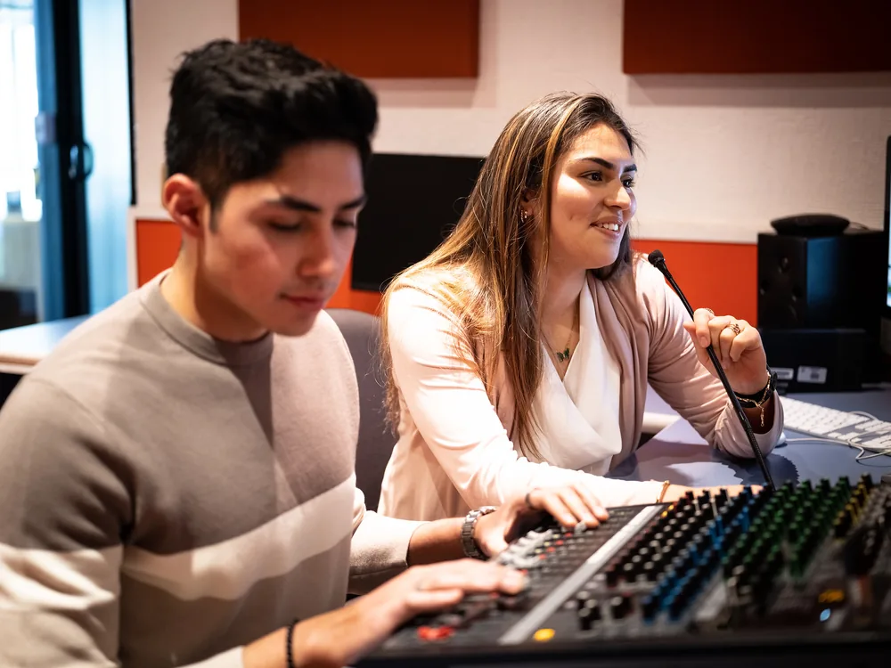
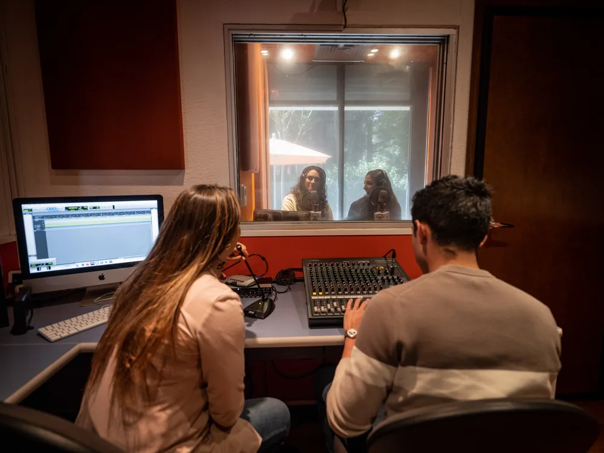
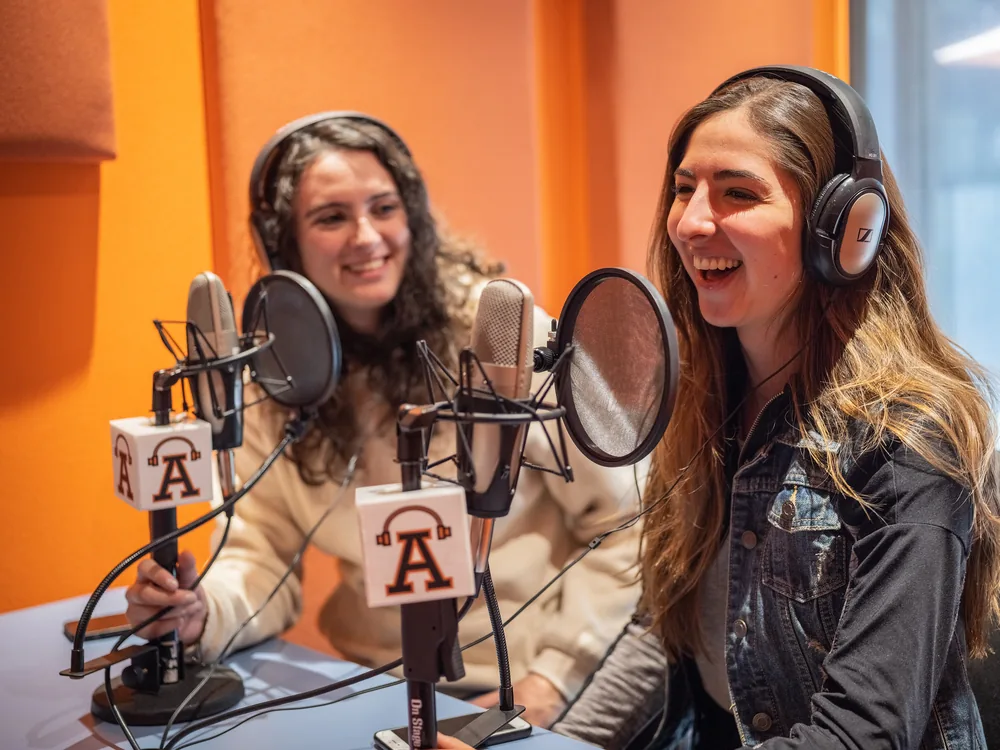
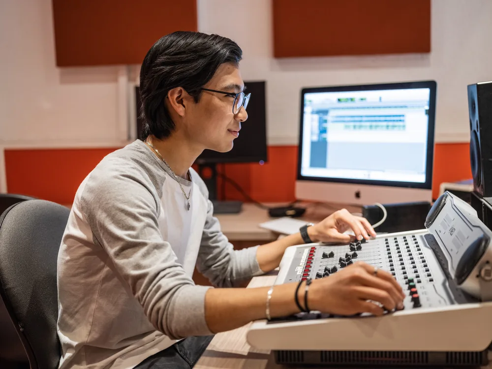

El foro de producción audiovisual más grande a nivel universitario en Latinoamérica
Produces en instalaciones de nivel profesional desde tus primeros semestres.
Conoce las instalacionesComunicación, Arquitectura y Diseño
Imagina. Crea. Produce.
Convierte tu voz y tu talento en impacto real. Estudia la carrera de Comunicación en el foro de producción audiovisual más grande a nivel universitario en Latinoamérica y prepárate para liderar la comunicación en cualquier industria.

¿Es para ti?
La carrera de Comunicación es para ti si te reconoces en lo siguiente.
Te imaginas creando videos, podcasts o campañas que la gente comparte y recuerda.
Te interesa entender cómo la tecnología cambia la forma en que consumimos noticias, series y redes sociales.
Quieres liderar la estrategia de comunicación de una marca, un medio o una institución.
Buscas una carrera creativa, pero con bases sólidas de investigación, ética y pensamiento crítico.
En la Anáhuac formamos comunicólogos con visión transmedia e interdisciplinaria: produces, investigas y piensas de forma estratégica a lo largo de toda la carrera.
¿Por qué la Anáhuac?
No solo estudias teoría de la comunicación: produces, investigas y practicas en instalaciones de nivel profesional, con visión de negocio.
Produces en instalaciones de nivel profesional desde tus primeros semestres.
Conoce las instalacionesComprendes el modelo de negocio de todas las industrias de la comunicación, no solo su parte creativa: te preparamos para liderar, no solo para producir.
Produces, cubres eventos y participas en voluntariados desde tus primeros semestres —conciertos, festivales, coberturas periodísticas nacionales e internacionales— y cursas tu Prácticum profesional, con valor curricular, en los últimos semestres.
Puedes vincularte con medios, agencias y marcas a través de la red de más de 300 organizaciones con las que colabora la Facultad.
Conoce con quién te vinculasPrograma acreditado internacionalmente por el ACEJMC y el CLAEP, y nacionalmente por el CONAC y el CIEES. Somos además organizadores del Premio Nacional de Expresión Oral y Escrita "Octavio Paz" y sede de la Medalla Anáhuac en Comunicación.
El Centro de Comunicación Aplicada de la Facultad, avalado por el PNPC del CONACYT, genera conocimiento de alta calidad en el que puedes participar.
Prepárate para ser el comunicólogo que quieres ser y la persona que quieres llegar a ser. Nuestro Modelo Anáhuac integra tu carrera en tres bloques —Profesional, Anáhuac e Interdisciplinario— para que curses materias de otras licenciaturas y sumes un Minor a tu formación en Comunicación.
Perfil de egreso
8 Semestres (4 años)
369 Créditos totales
Modelo 2025: Bloque Profesional 273 + Bloque Anáhuac 54 + Bloque Interdisciplinario 42.
Plan de estudios
Tu plan combina teoría de la comunicación con producción real desde los primeros semestres —proyectos, coberturas de eventos y voluntariados— y prácticas formales (Prácticum) en los últimos.
El corazón de tu carrera. Aquí desarrollas las competencias de la profesión, produces en los laboratorios, cursas tu Prácticum y sigues la ruta de liderazgo y emprendimiento. Además eliges tus Minors —diplomas profesionales universitarios— que amplían tu perfil.
El sello que nos distingue. Un espacio de autoconocimiento, ética y sentido de vida que te forma como persona íntegra y como líder de acción positiva, consciente de su vocación y de su impacto en los demás.
Sales de tu carrera para entender el mundo real. Cursas asignaturas de otras disciplinas y conectas saberes que hoy el entorno profesional exige integrados, ampliando tu visión más allá de tu área de estudio.
Campo laboral
Como egresado de Comunicación de la Anáhuac puedes ejercer en medios digitales y producción audiovisual, la industria cinematográfica, agencias de contenido y noticias, medios periodísticos, agencias de publicidad y mercadotecnia, y comunicación institucional dentro de empresas e instituciones —también en industrias no ligadas a los medios, como salud, tecnología o el tercer sector.

Egresados de Comunicación de la Anáhuac ocupan hoy posiciones de liderazgo en empresas globales como Amazon, Google y plataformas de streaming, además de medios internacionales; otros fundan sus propias agencias y productoras.

Cabinas de audio, doblaje y Foley, estudio de cine y televisión en FullHD, captura de movimiento (MOCAP) y Radio Anáhuac: produces en instalaciones de nivel profesional desde tus primeros semestres, no al final de la carrera.
+300 organizaciones aliadas · +200 empresas líderes para tus prácticas
En la Red Anáhuac, el 70% de nuestros egresados se emplea al poco tiempo de graduarse (Top 10 de América Latina en el QS Graduate Employability Ranking). El resultado depende también del compromiso y la proactividad de cada egresado, respaldado por la exigencia académica y el acompañamiento de la Facultad.
Instalaciones y campus
La licenciatura es presencial y se imparte en nuestros dos campus, con instalaciones de producción de nivel profesional.
Av. Universidad Anáhuac 46, Lomas Anáhuac, Huixquilucan, Estado de México.





Av. de los Tanques 865, Torres de Potrero, Álvaro Obregón, Ciudad de México.
Conoce el campusLeones Anáhuac que han transformado sus vidas con nosotros

"[cita en primera persona]"
[Nombre] Egresado(a) de Comunicación, generación [año], Campus [Norte/Sur]
"[cita en primera persona]"
[Nombre] Egresado(a) de Comunicación, generación [año], Campus [Norte/Sur]

"[cita en primera persona]"
[Nombre] Egresado(a) de Comunicación, generación [año], Campus [Norte/Sur]
"[cita en primera persona]"
[Nombre] Egresado(a) de Comunicación, generación [año], Campus [Norte/Sur]
"[cita en primera persona]"
[Nombre] Egresado(a) de Comunicación, generación [año], Campus [Norte/Sur]
"[cita en primera persona]"
[Nombre] Egresado(a) de Comunicación, generación [año], Campus [Norte/Sur]
Docencia y colaboradores
Aprendes de profesores vinculados a la industria y te formas en contacto con cientos de organizaciones y empresas del sector.

[Cargo o logro profesional — pendiente]

[Cargo o logro profesional — pendiente]

[Cargo o logro profesional — pendiente]

[Cargo o logro profesional — pendiente]

[Cargo o logro profesional — pendiente]

[Cargo o logro profesional — pendiente]
Incluye profesores visitantes extranjeros y webinars con profesores internacionales.
La Facultad mantiene convenios con más de 300 organizaciones —institucionales y cátedras corporativas, en los sectores público, privado y tercer sector— y sus estudiantes realizan prácticas en más de 200 empresas líderes «triple A».
Intercambios académicos en destinos como Madrid, Corea, Australia, Japón, Chile y Argentina, cursos de verano en el extranjero —por ejemplo, fotografía en Nueva York— y clases remotas con profesores internacionales (COILs y MOOCs), con opción de doble titulación.
Puedes cursar parte de tu formación en alguno de los 7 campus de la Red Anáhuac en la República Mexicana.
Siguiente paso
Avanza a tu ritmo: explora costos y apoyos, revisa fechas, inicia tu admisión o habla con un asesor.
Calcula la inversión de tu licenciatura y conoce las opciones de pago.
CotizarComienza tu proceso 100% en línea en solo 6 pasos.
EmpezarConsulta el calendario de exámenes de admisión a lo largo del año.
ConsultarDescubre las becas y apoyos económicos disponibles para estudiar aquí.
Ver apoyosResuelve tus dudas con un asesor preuniversitario, por campus.
ContactarPreguntas frecuentes
La Licenciatura en Comunicación dura 8 semestres, es decir, 4 años, en modalidad presencial.
Cursarás laboratorios de producción audiovisual, fotografía y guionismo, además de materias de publicidad, periodismo, comunicación organizacional e investigación de la comunicación, entre otras.
Sí. Produces y participas en coberturas y voluntariados desde tus primeros semestres, y cursas Prácticum I y II —con valor curricular— en los últimos, con acceso a la red de más de 200 empresas líderes con las que colabora la Facultad, entre ellas Televisa, TV Azteca, Google, Microsoft, PepsiCo, Coca-Cola y OCESA.
No. La Licenciatura en Comunicación de la Anáhuac tiene un alto nivel de exigencia académica y profesional: exige trabajo en equipo, compromiso y profundidad en cada proyecto, además de que entiendes el modelo de negocio de toda la industria de la comunicación.
No. El campo laboral de un comunicólogo es amplio y transversal a cualquier industria: salud, tecnología, entretenimiento, empresas corporativas y organizaciones sin fines de lucro, entre otras.
Comunicación tiene un enfoque más integral y estratégico en medios y mensajes, mientras que Dirección de Empresas de Entretenimiento se especializa en la gestión y producción de proyectos creativos y eventos masivos.
Sí. En la Anáhuac, la Licenciatura en Comunicación es también conocida como Licenciatura en Ciencias de la Comunicación; el plan de estudios y el título son los mismos.
Puedes calcular tu colegiatura y conocer opciones de beca en nuestro cotizador.
Mucho más que solo una Universidad.
Conoce por qué vivirás una experiencia universitaria única con nosotros.
Conoce la experiencia AnáhuacDesarrolla las habilidades, conocimientos y experiencia que necesitas para construir un perfil integral. Nuestro modelo educativo integra formación profesional, intelectual, humana, social y espiritual.
Amplía tu experiencia con intercambios, convenios y opciones académicas que amplían tu perspectiva y enriquecen tu formación dentro y fuera del aula.

Haz deporte, participa en actividades culturales, involúcrate en proyectos sociales y forma parte de una comunidad activa.
Disfruta de espacios creados para tu desarrollo integral: deportes, salud, innovación y recursos únicos que encontrarás en la Universidad Anáhuac.

Solicita información
Cuéntanos qué te interesa y te enviaremos el material directamente a tu correo o WhatsApp. No recibirás la llamada de un asesor; si prefieres hablar con alguien, escríbenos desde «Elige el siguiente paso».